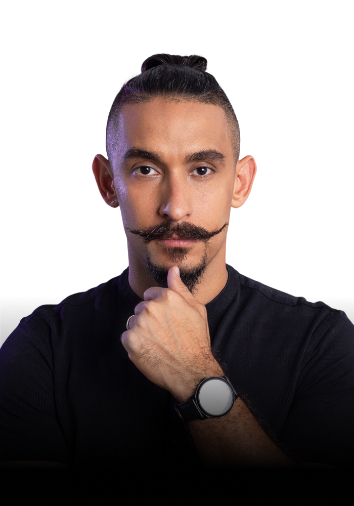
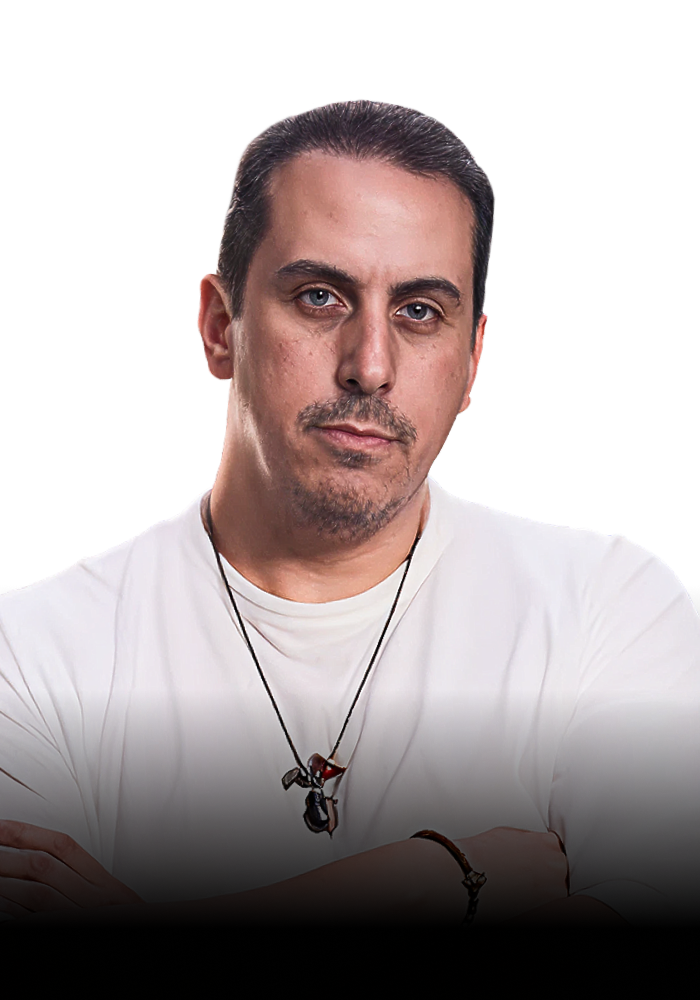

SPEAKERS
Conoce a nuestros expertos

ÁLVARO LUQUE
Fundador de Luque Academy, CEO, autor best seller y uno de los líderes más influyentes del ecosistema de emprendimiento digital en Latinoamérica. Ha impactado la vida de más de 3,800 emprendedores y usa una metodología que ha transformado cientos de negocios a través de estrategias exitosas en lanzamientos digitales, crecimiento empresarial y monetización estratégica.



DILIO DONADO
Empresario, inversionista y consultor con más de 20 años de experiencia en el mundo de los negocios. A lo largo de mi trayectoria, he fundado e impulsado más de 88 empresas en 6 países y he tenido el privilegio de asesorar a más de 250 negocios de distintos sectores. Mi misión es transformar negocios estancados en modelos exitosos que generen libertad, impacto y resultados reales.

MARCO LEZAMA
Empresario, inversionista y consultor con más de 20 años de experiencia en el mundo de los negocios. A lo largo de mi trayectoria, he fundado e impulsado más de 88 empresas en 6 países y he tenido el privilegio de asesorar a más de 250 negocios de distintos sectores. Mi misión es transformar negocios estancados en modelos exitosos que generen libertad, impacto y resultados reales.
GERARDO OCHOA
Empresario, inversionista y consultor con más de 20 años de experiencia en el mundo de los negocios. A lo largo de mi trayectoria, he fundado e impulsado más de 88 empresas en 6 países y he tenido el privilegio de asesorar a más de 250 negocios de distintos sectores. Mi misión es transformar negocios estancados en modelos exitosos que generen libertad, impacto y resultados reales.
MÓNICA MONTAÑEZ
Experta en redes sociales, con 13 años de experiencia y he ayudado a +800 marcas a construir su presencia digital y vender efectivamente a través de Instagram. Mi enfoque estratégico y personalizado maximiza el engagement y los resultados, transformando metas en logros concretos.